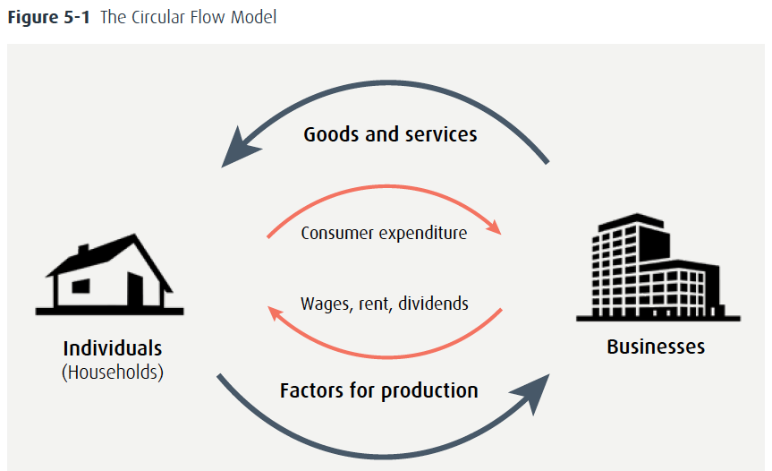
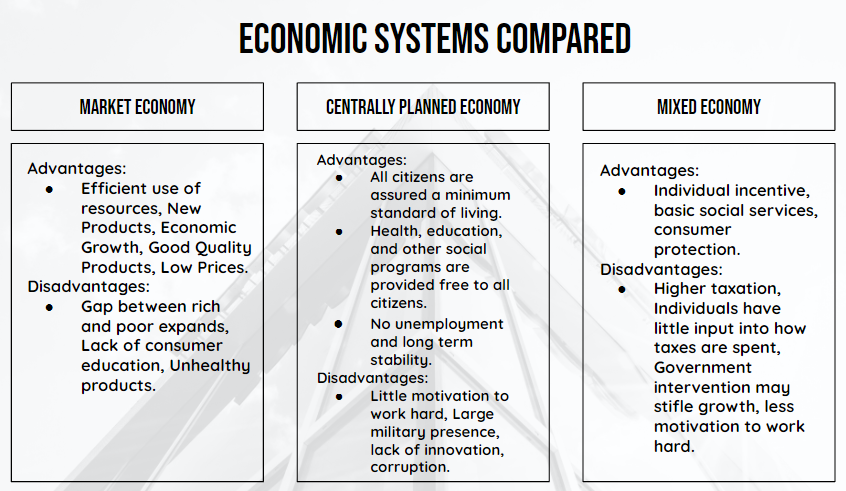

Economic and Political Systems
|
What is an economic system?
The way a country organizes its resources and distributes goods and services to its citizens. |
What is a political system?
The type of government by which a country is run. Economic and political systems are closely linked, and both directly impact the way international business is done. |

A country’s economic system is defined by the answers to the following questions:
- What should the country produce and in what quantities?
- How should scarce resources such as labor and capital be allocated?
- How should goods and services be distributed throughout the country?
- What should be the prices of the goods and services?
Tabs
- Also known as capitalism or private enterprise.
- Businesses, consumers, and government act independently of one another.
- Market forces and self-interest determine what goods are created and solved.
- The government has little direct involvement in business.
- Private property, profit, and competition.
- Also known as communism or a command economy.
- The government controls all elements of the economy and establishes how income is distributed.
- The government provides education, health care, employment, and housing to all members of society.
- Treats the ideas of private property, profit, and competition differently from market economies--how?
- Also known as a modified free enterprise system.
- Most economies in the world are mixed: that is, they feature characteristics of both market and centrally planned economic systems.
- Social programs (health care, pension plans, parental leave, employment insurance, etc.) mix with capitalist private enterprises--the balance in each country is different.
- e.g., compare France, Canada, Sweden, and the United States.

|
Political System: Democracy
The most prevalent forms are democracy and autocracy. Democracy: government through elected representatives characterized by free and fair elections, the rule of law, a free press, and a freedom of religion. |
Political System: Autocracy
The most prevalent forms are democracy and autocracy. Autocracy: State governed by a single individual or a small group of people with unlimited power. Totalitarianism: government led by a dictator, controlling all aspects of the state. |
Classifications of economic development
There are different ways to classify economic development, but all countries fit
into one of the following general classifications determined by the United Nations
(UN) and its partners:
Tabs
- Characterized by high per capita income and strong gross domestic product (GDP).
- High standards of living.
- Rely less on primary industries into tertiary (service) industries.
- Strong trade alliances.
- Examples: Canada, the United States, Japan, Germany, Australia, and the United Kingdom.
- Moving from a centrally planned to a market economic system (but still mixed).
- During the transition, possible problems like inflation, increased unemployment and widening income gaps.
- Examples: Albania, Serbia, Montenegro, Ukraine.
- Moving away from agriculture and natural resources toward more industrialization, manufacturing, and technology.
- Often characterized by a lack of social services, poor infrastructure, and low literacy levels.
- However, not all developing countries are on the low scale of development. Many, like Brazil, China, and India, are quite different and more developed than economies like Angola, Ethiopia, Cambodia, and Haiti, for example.
Callout
Index of Economic Freedom
Measures the economic freedom of individuals in a country, factoring in issues such as property rights, government integrity,
judicial effectiveness, labor freedom, and investment freedom.
Top 10 Countries on the Index of Economic Freedom, 2018

Source: https://www.heritage.org/international-economies/commentary/2018-index-economic-freedom